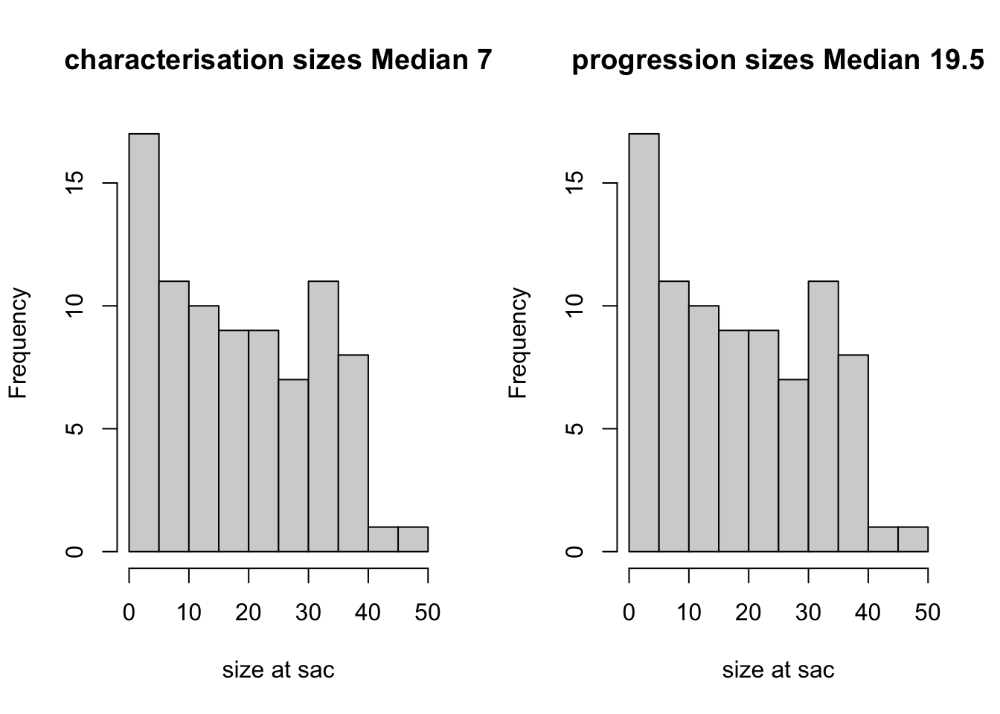
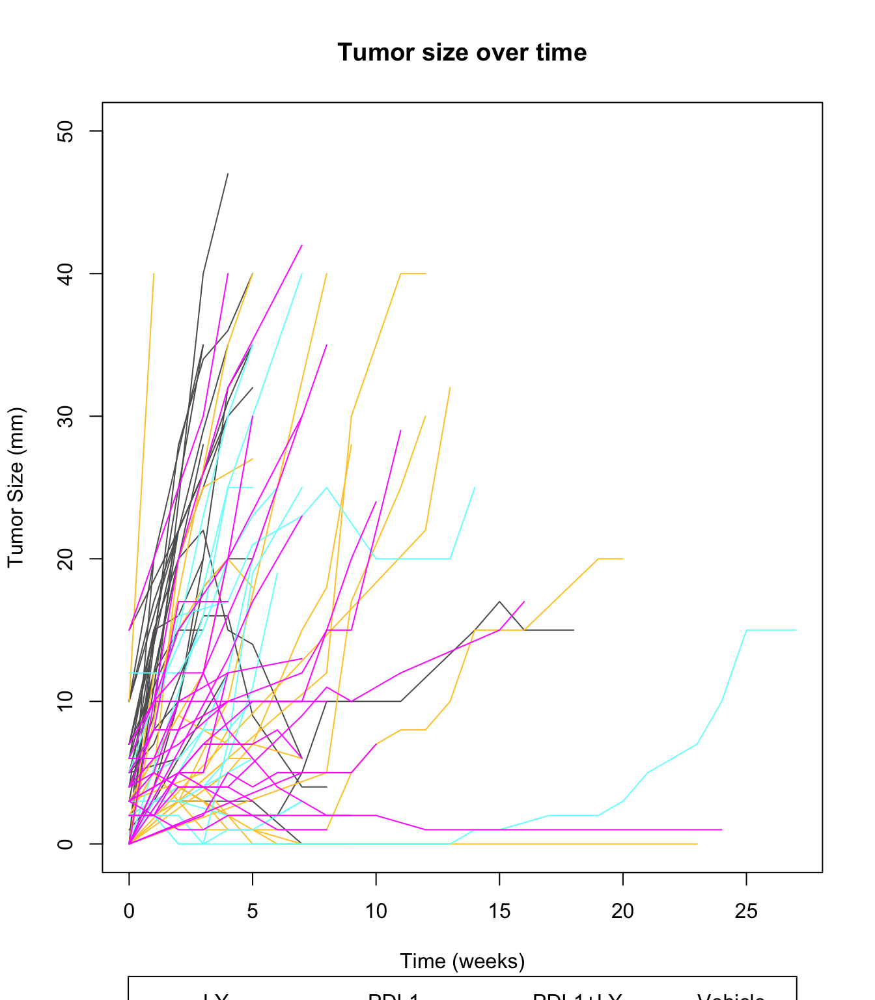
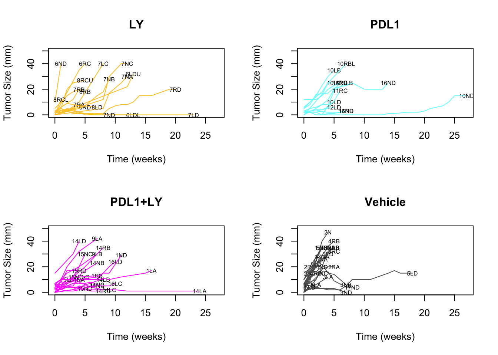
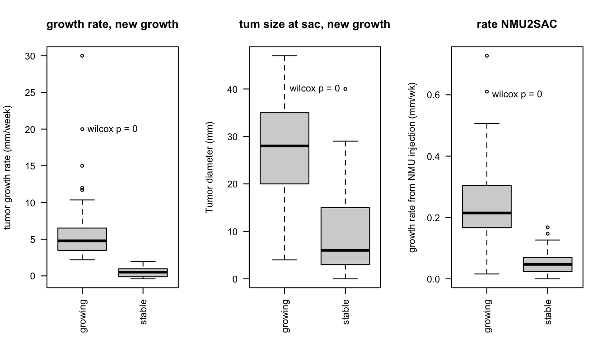
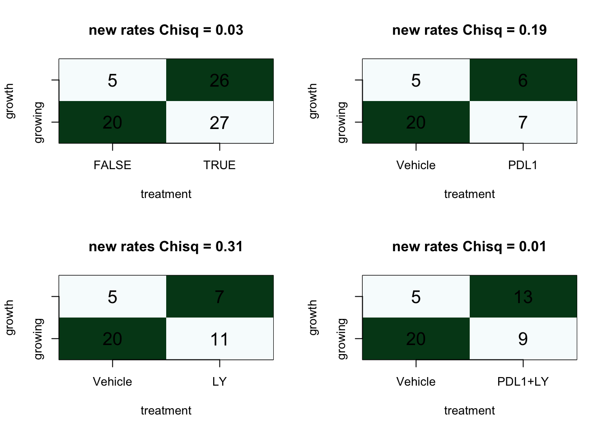
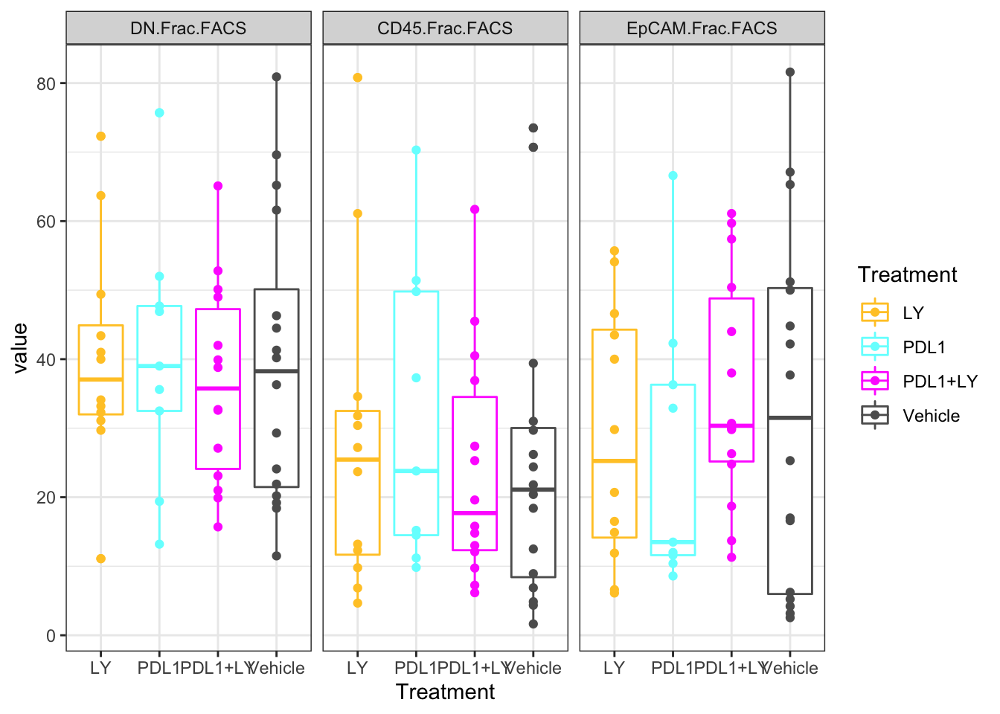
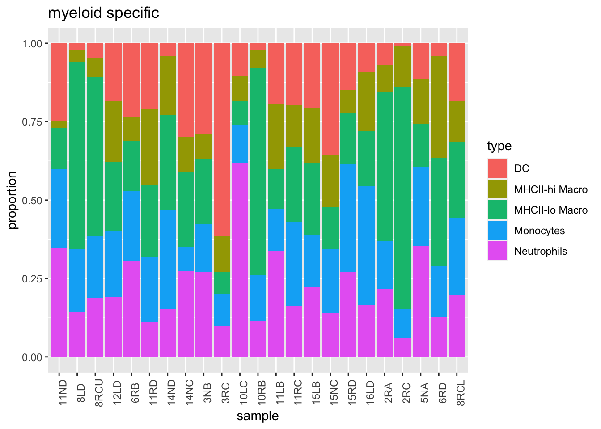
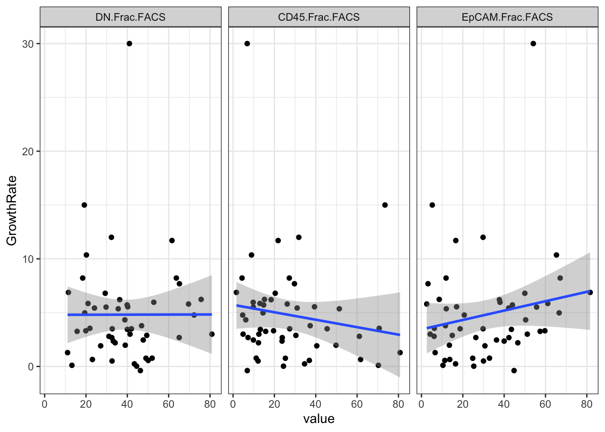

Chapter 2 Cohort characteristics
Below we assess summary statistics on clinico-pathological features of this data set. This includes information on:
- treatment
- tumor size
- growth rates (mm/week)
- number of tumors per rat
Cdata=xlsx::read.xlsx("../metadata/Extended Data Table1.xlsx", sheetIndex=1)
Cdata$NewID[which(duplicated(Cdata$NewID)==T)]
## [1] NA NA NA
scroll_box(kable(Cdata[ ,1:20], format="html"),
height="300px", width="100%")| NewID | TumorID | Rat_ID | Location | Cohort | Char.Cohort.Batch | Treatment | Age.at.injection.days. | Date.of.NMU.injection | Date.when.tumor.was.first.palpated | Date.Sacrificed | Tumor.growth.status | Time.NMU2Tumor.days | Time.Tumor2Sac.days | Time.NMU2Sac.days | Tumor.diameter.sac.mm | Tumor.Growth | Tumor.Histology | CD45.Frac.FACS | DN.Frac.FACS |
|---|---|---|---|---|---|---|---|---|---|---|---|---|---|---|---|---|---|---|---|
| P24T1 | 10L_B | 10L | B | Progression | NA | PDL1 | 32-36 | 2018-02-14 | 2018-03-29 | 2018-05-04 | growing | 43 | 36 | 79 | 35.0 | growing | well differentiated mammary solid adenocarcinoma | 15.2 | 75.7 |
| P24T2 | 10L_C | 10L | C | Progression | NA | PDL1 | 32-36 | 2018-02-14 | 2018-04-12 | 2018-05-04 | growing | 57 | 22 | 79 | 25.0 | growing | well differentiated mammary solid adenocarcinoma | 51.4 | 35.6 |
| P24T3 | 10L_D | 10L | D | Progression | NA | PDL1 | 32-36 | 2018-02-14 | 2018-03-29 | 2018-05-04 | stable | 43 | 36 | 79 | 10.0 | stable | well differentiated mammary solid adenocarcinoma | 49.8 | 39 |
| P25T1 | 10N_A | 10N | A | Progression | NA | PDL1 | 32-36 | 2018-02-14 | 2018-11-08 | 2018-11-15 | no data (big) | 267 | 7 | 274 | 12.0 | NA | well differentiated mammary solid adenocarcinoma | NA | NA |
| P25T2 | 10N_D | 10N | D | Progression | NA | PDL1 | 32-36 | 2018-02-14 | 2018-04-05 | 2018-11-15 | stable | 50 | 224 | 274 | 15.0 | stable | mucinous carcinoma | NA | NA |
| P25T3 | 10N3 | NA | NA | NA | NA | NA | NA | NA | NA | NA | no data | NA | NA | NA | NA | NA | NA | NA | NA |
| P26T1 | 10R_BL | 10R | BL | Progression | NA | PDL1 | 32-36 | 2018-02-14 | 2018-04-02 | 2018-05-23 | growing | 47 | 51 | 98 | 40.0 | growing | well differentiated mammary solid adenocarcinoma | 14.5 | 19.4 |
| P26T2 | 10R_BU | 10R | BU | Progression | NA | PDL1 | 32-36 | 2018-02-14 | 2018-04-02 | 2018-05-23 | no data | 47 | 51 | 98 | 12.0 | NA | well differentiated mammary solid adenocarcinoma | 31.7 | 40.2 |
| P26T3 | 10R_C | 10R | C | Progression | NA | PDL1 | 32-36 | 2018-02-14 | 2018-05-23 | 2018-05-23 | no data (tiny) | 98 | 0 | 98 | 4.0 | NA | well differentiated mammary solid adenocarcinoma | NA | NA |
| P27T1 | 11L_B | 11L | B | Progression | NA | PDL1 | 32-36 | 2018-02-14 | 2018-04-19 | 2018-06-06 | growing | 64 | 48 | 112 | 25.0 | growing | well differentiated mammary solid adenocarcinoma | 37.3 | 46.9 |
| P28T1 | 11N_D | 11N | D | Progression | NA | PDL1 | 32-36 | 2018-02-14 | 2018-05-03 | 2018-06-21 | stable | 78 | 49 | 127 | 3.0 | stable | well differentiated mammary solid adenocarcinoma | 70.3 | 13.2 |
| P29T1 | 11R_C | 11R | C | Progression | NA | PDL1 | 32-36 | 2018-02-14 | 2018-04-26 | 2018-06-06 | growing | 71 | 41 | 112 | 19.0 | growing | well differentiated mammary solid adenocarcinoma | 23.8 | 32.5 |
| P29T2 | 11R_D | 11R | D | Progression | NA | PDL1 | 32-36 | 2018-02-14 | 2018-04-26 | 2018-06-06 | growing | 71 | 41 | 112 | 25.0 | growing | well differentiated mammary solid adenocarcinoma | NA | NA |
| P30T1 | 12L_C | 12L | C | Progression | NA | PDL1 | 32-36 | 2018-02-14 | 2018-05-14 | 2018-06-21 | no data (tiny) | 89 | 38 | 127 | 4.0 | NA | well differentiated mammary solid adenocarcinoma | NA | NA |
| P30T2 | 12L_D | 12L | D | Progression | NA | PDL1 | 32-36 | 2018-02-14 | 2018-05-14 | 2018-06-21 | stable | 89 | 38 | 127 | 6.0 | stable | well differentiated mammary solid adenocarcinoma | 11.2 | 52 |
| P41T1 | 13N_A | 13N | A | Progression | NA | Vehicle | 32-36 | 2018-02-14 | 2018-06-22 | 2018-07-27 | growing | 128 | 35 | 163 | 35.0 | growing | well differentiated mammary solid adenocarcinoma | 18.4 | 36.3 |
| P42T1 | 14L_A | 14L | A | Progression | NA | PDL1+LY | 32-36 | 2018-02-14 | 2018-03-29 | 2018-10-10 | stable | 43 | 195 | 238 | 1.0 | stable | well differentiated mammary solid adenocarcinoma | NA | NA |
| P42T2 | 14L_B | 14L | B | Progression | NA | PDL1+LY | 32-36 | 2018-02-14 | 2018-07-26 | 2018-10-10 | growing | 162 | 76 | 238 | 40.0 | stable | well differentiated mammary solid adenocarcinoma | 12.1 | 32.6 |
| P42T3 | 14L_C | 14L | C | Progression | NA | PDL1+LY | 32-36 | 2018-02-14 | 2018-07-12 | 2018-10-10 | stable | 148 | 90 | 238 | 2.0 | stable | well differentiated mammary solid adenocarcinoma | NA | NA |
| P42T4 | 14L_D | 14L | D | Progression | NA | PDL1+LY | 32-36 | 2018-02-14 | 2018-08-16 | 2018-10-10 | growing | 183 | 55 | 238 | 40.0 | growing | fibroadenoma | 9.74 | 52.8 |
| P31T1 | 14N_B | 14N | B | Progression | NA | PDL1+LY | 32-36 | 2018-02-14 | 2018-05-03 | 2018-05-04 | growing | 78 | 1 | 79 | 23.0 | growing | well differentiated mammary solid adenocarcinoma | 19.6 | 19.9 |
| P31T2 | 14N_C | 14N | C | Progression | NA | PDL1+LY | 32-36 | 2018-02-14 | 2018-04-05 | 2018-05-04 | stable | 50 | 29 | 79 | 6.0 | stable | well differentiated mammary solid adenocarcinoma | 36.9 | 50.1 |
| P31T3 | 14N_D | 14N | D | Progression | NA | PDL1+LY | 32-36 | 2018-02-14 | 2018-04-19 | 2018-05-04 | stable | 64 | 15 | 79 | 5.0 | stable | well differentiated mammary solid adenocarcinoma | 25.3 | 49 |
| P32T1 | 14R_B | 14R | B | Progression | NA | PDL1+LY | 32-36 | 2018-02-14 | 2018-05-07 | 2018-05-23 | growing | 82 | 16 | 98 | 35.0 | growing | well differentiated mammary solid adenocarcinoma | 6.16 | 38.8 |
| P32T2 | 14R_D | 14R | D | Progression | NA | PDL1+LY | 32-36 | 2018-02-14 | 2018-04-02 | 2018-05-23 | stable | 47 | 51 | 98 | 1.0 | stable | well differentiated mammary solid adenocarcinoma | NA | NA |
| P33T1 | 15L_B | 15L | B | Progression | NA | PDL1+LY | 32-36 | 2018-02-14 | 2018-04-19 | 2018-05-04 | growing | 64 | 15 | 79 | 10.0 | growing | well differentiated mammary solid adenocarcinoma | 45.5 | 32.7 |
| P34T1 | 15N_C | 15N | C | Progression | NA | PDL1+LY | 32-36 | 2018-02-14 | 2018-05-24 | 2018-06-06 | growing | 99 | 13 | 112 | 30.0 | growing | well differentiated mammary solid adenocarcinoma | 14.8 | 39.9 |
| P34T2 | 15N_C-D | 15N | C-D | Progression | NA | PDL1+LY | 32-36 | 2018-02-14 | 2018-05-17 | 2018-06-06 | growing | 92 | 20 | 112 | 22.0 | growing | fibroadenoma | 7.25 | 65.1 |
| P34T3 | 15N_D | 15N | D | Progression | NA | PDL1+LY | 32-36 | 2018-02-14 | 2018-05-03 | 2018-06-06 | stable | 78 | 34 | 112 | 3.0 | stable | well differentiated mammary solid adenocarcinoma | NA | NA |
| P35T1 | 15R_D | 15R | D | Progression | NA | PDL1+LY | 32-36 | 2018-02-14 | 2018-05-03 | 2018-06-06 | growing | 78 | 34 | 112 | 17.0 | growing | well differentiated mammary solid adenocarcinoma | 27.4 | 42 |
| P36T1 | 16L_A | 16L | A | Progression | NA | PDL1+LY | 32-36 | 2018-02-14 | 2018-07-24 | 2018-07-27 | no data | 160 | 3 | 163 | 5.0 | NA | well differentiated mammary solid adenocarcinoma | NA | NA |
| P36T2 | 16L_C | 16L | C | Progression | NA | PDL1+LY | 32-36 | 2018-02-14 | 2018-06-26 | 2018-07-27 | stable | 132 | 31 | 163 | 7.0 | stable | well differentiated mammary solid adenocarcinoma | 61.7 | 23.1 |
| P36T3 | 16L_D | 16L | D | Progression | NA | PDL1+LY | 32-36 | 2018-02-14 | 2018-05-15 | 2018-07-27 | stable | 90 | 73 | 163 | 24.0 | stable | well differentiated mammary solid adenocarcinoma | 40.5 | 27.1 |
| P37T1 | 16N_D | 16N | D | Progression | NA | PDL1 | 32-36 | 2018-02-14 | 2018-06-21 | 2018-10-04 | stable | 127 | 105 | 232 | 25.0 | stable | well differentiated mammary solid adenocarcinoma | NA | NA |
| P38T1 | 16R_C | 16R | C | Progression | NA | PDL1 | 32-36 | 2018-02-14 | 2018-06-21 | 2018-08-16 | growing | 127 | 56 | 183 | 25.0 | growing | well differentiated mammary solid adenocarcinoma | 9.83 | 47.7 |
| P38T2 | 16R_D | 16R | D | Progression | NA | PDL1 | 32-36 | 2018-02-14 | 2018-06-21 | 2018-08-16 | stable | 127 | 56 | 183 | 3.0 | stable | well differentiated mammary solid adenocarcinoma | NA | NA |
| P39T1 | 17N_A | 17N | A | Progression | NA | Vehicle | 32-36 | 2018-02-14 | 2018-07-05 | 2018-08-02 | growing | 141 | 28 | 169 | 28.0 | growing | mucinous carcinoma | 20.4 | 29.3 |
| P39T2 | 17N_B | 17N | B | Progression | NA | Vehicle | 32-36 | 2018-02-14 | 2018-05-31 | 2018-08-02 | stable | 106 | 63 | 169 | 4.0 | NA | well differentiated mammary solid adenocarcinoma | NA | NA |
| P39T3 | 17N_D | 17N | D | Progression | NA | Vehicle | 32-36 | 2018-02-14 | 2018-08-02 | 2018-08-02 | stable | 169 | 0 | 169 | 4.0 | stable | well differentiated mammary solid adenocarcinoma | 6.88 | 46.3 |
| P40T1 | 17R_B | 17R | B | Progression | NA | Vehicle | 32-36 | 2018-02-14 | 2018-05-31 | 2018-06-21 | growing | 106 | 21 | 127 | 35.0 | growing | well differentiated mammary solid adenocarcinoma | 4.35 | 18.4 |
| P1T1 | 1L_A | 1L | A | Progression | NA | PDL1+LY | 32-36 | 2018-02-14 | 2018-08-02 | 2018-11-29 | stable | 169 | 119 | 288 | 17.0 | stable | well differentiated mammary solid adenocarcinoma | NA | NA |
| P2T1 | 1N_A | 1N | A | Progression | NA | PDL1+LY | 32-36 | 2018-02-14 | 2018-09-20 | 2018-10-25 | stable | 218 | 35 | 253 | 10.0 | stable | well differentiated mammary solid adenocarcinoma | NA | NA |
| P2T2 | 1N_D | 1N | D | Progression | NA | PDL1+LY | 32-36 | 2018-02-14 | 2018-08-02 | 2018-10-25 | growing | 169 | 84 | 253 | 29.0 | stable | well differentiated mammary solid adenocarcinoma | NA | NA |
| P3T2 | 1R_B | 1R | B | Progression | NA | PDL1+LY | 32-36 | 2018-02-14 | 2018-08-02 | 2018-10-13 | stable | 169 | 72 | 241 | 15.0 | stable | well differentiated mammary solid adenocarcinoma | NA | NA |
| P4T1 | 2N_ | 2N | D | Progression | NA | Vehicle | 32-36 | 2018-02-14 | 2018-04-02 | 2018-05-02 | growing | 47 | 30 | 77 | 47.0 | growing | well differentiated mammary solid adenocarcinoma | 21.8 | 61.6 |
| P5T1 | 2R_A | 2R | A | Progression | NA | Vehicle | 32-36 | 2018-02-14 | 2018-03-29 | 2018-05-09 | growing | 43 | 41 | 84 | 20.0 | growing | well differentiated mammary solid adenocarcinoma | 70.7 | 21.9 |
| P5T2 | 2R_C | 2R | C | Progression | NA | Vehicle | 32-36 | 2018-02-14 | 2018-03-29 | 2018-05-09 | growing | 43 | 41 | 84 | 15.0 | growing | well differentiated mammary solid adenocarcinoma | 73.5 | 19.2 |
| P5T3 | 2R_D | 2R | D | Progression | NA | Vehicle | 32-36 | 2018-02-14 | 2018-03-29 | 2018-05-09 | growing | 43 | 41 | 84 | 20.0 | growing | well differentiated mammary solid adenocarcinoma | NA | NA |
| P6T1 | 3L_A | 3L | A | Progression | NA | Vehicle | 32-36 | 2018-02-14 | 2018-05-03 | 2018-05-09 | growing | 78 | 6 | 84 | 12.0 | growing | well differentiated mammary solid adenocarcinoma | 12.5 | 80.9 |
| P6T2 | 3L_D | 3L | D | Progression | NA | Vehicle | 32-36 | 2018-02-14 | 2018-04-05 | 2018-05-09 | growing | 50 | 34 | 84 | 30.0 | growing | fibroadenoma | 26.2 | 69.6 |
| P7T1 | 3N_B | 3N | B | Progression | NA | Vehicle | 32-36 | 2018-02-14 | 2018-05-03 | 2018-06-21 | stable | 78 | 49 | 127 | 6.0 | stable | well differentiated mammary solid adenocarcinoma | 24.4 | 44.5 |
| P7T2 | 3N_D | 3N | D | Progression | NA | Vehicle | 32-36 | 2018-02-14 | 2018-05-03 | 2018-06-21 | stable | 78 | 49 | 127 | 3.0 | stable | well differentiated mammary solid adenocarcinoma | NA | NA |
| P8T1 | 3R_B | 3R | B | Progression | NA | Vehicle | 32-36 | 2018-02-14 | 2018-04-02 | 2018-05-09 | growing | 47 | 37 | 84 | 35.0 | growing | well differentiated mammary solid adenocarcinoma | 29.7 | 65.2 |
| P8T2 | 3R_C | 3R | C | Progression | NA | Vehicle | 32-36 | 2018-02-14 | 2018-04-02 | 2018-05-09 | growing | 47 | 37 | 84 | 32.0 | growing | well differentiated mammary solid adenocarcinoma | 39.4 | 40.2 |
| P9T1 | 4L_B | 4L | B | Progression | NA | Vehicle | 32-36 | 2018-02-14 | 2018-04-09 | 2018-05-21 | growing | 54 | 42 | 96 | 35.0 | growing | well differentiated mammary solid adenocarcinoma | 1.64 | 11.5 |
| P10T1 | 4N_C | 4N | C | Progression | NA | Vehicle | 32-36 | 2018-02-14 | 2018-04-09 | 2018-05-21 | growing | 54 | 42 | 96 | 15.0 | growing | well differentiated mammary solid adenocarcinoma | 4.86 | 41.3 |
| P10T2 | 4N_D | 4N | D | Progression | NA | Vehicle | 32-36 | 2018-02-14 | 2018-04-09 | 2018-05-21 | growing | 54 | 42 | 96 | 20.0 | growing | well differentiated mammary solid adenocarcinoma | NA | NA |
| P11T1 | 4R_B | 4R | B | Progression | NA | Vehicle | 32-36 | 2018-02-14 | 2018-04-09 | 2018-05-21 | growing | 54 | 42 | 96 | 40.0 | growing | well differentiated mammary solid adenocarcinoma | NA | NA |
| P11T2 | 4R_C | 4R | C | Progression | NA | Vehicle | 32-36 | 2018-02-14 | 2018-04-09 | 2018-05-21 | growing | 54 | 42 | 96 | 15.0 | growing | well differentiated mammary solid adenocarcinoma | NA | NA |
| P12T1 | 5L_A | 5L | A | Progression | NA | Vehicle | 32-36 | 2018-02-14 | 2018-10-03 | 2018-10-24 | no data | 231 | 21 | 252 | 6.0 | stable | well differentiated mammary solid adenocarcinoma | NA | NA |
| P12T2 | 5L_B | 5L | B | Progression | NA | Vehicle | 32-36 | 2018-02-14 | 2018-10-17 | 2018-10-24 | no data | 245 | 7 | 252 | 4.0 | growing | well differentiated mammary solid adenocarcinoma | NA | NA |
| P12T3 | 5L_C | 5L | C | Progression | NA | Vehicle | 32-36 | 2018-02-14 | 2018-10-03 | 2018-10-24 | growing | 231 | 21 | 252 | 22.0 | growing | well differentiated mammary solid adenocarcinoma | NA | NA |
| P12T4 | 5L_D | 5L | D | Progression | NA | Vehicle | 32-36 | 2018-02-14 | 2018-06-06 | 2018-10-24 | stable | 112 | 140 | 252 | 15.0 | stable | well differentiated mammary solid adenocarcinoma | NA | NA |
| P13T1 | 5N_A | 5N | A | Progression | NA | Vehicle | 32-36 | 2018-02-14 | 2018-06-07 | 2018-06-29 | growing | 113 | 22 | 135 | 26.0 | growing | mucinous carcinoma | 31 | 24.1 |
| P14T1 | 5R_B | 5R | B | Progression | NA | Vehicle | 32-36 | 2018-02-14 | 2018-06-07 | 2018-06-29 | growing | 113 | 22 | 135 | 35.0 | growing | well differentiated mammary solid adenocarcinoma | 8.93 | 20.2 |
| P15T1 | 6L_DL | 6L | DL | Progression | NA | LY | 32-36 | 2018-02-14 | 2018-03-29 | 2018-06-29 | stable | 43 | 92 | 135 | 0.0 | stable | NA | NA | NA |
| P15T2 | 6L_DU | 6L | DU | Progression | NA | LY | 32-36 | 2018-02-14 | 2018-03-29 | 2018-06-29 | growing | 43 | 92 | 135 | 32.0 | growing | well differentiated mammary solid adenocarcinoma | 12.3 | 34.1 |
| P16T1 | 6N_D | 6N | D | Progression | NA | LY | 32-36 | 2018-02-14 | 2018-04-02 | 2018-04-10 | growing | 47 | 8 | 55 | 40.0 | growing | well differentiated mammary solid adenocarcinoma | 6.85 | 41 |
| P17T1 | 6R_B | 6R | B | Progression | NA | LY | 32-36 | 2018-02-14 | 2018-03-29 | 2018-05-04 | stable | 43 | 36 | 79 | 18.0 | growing | well differentiated mammary solid adenocarcinoma | 61.1 | 31.1 |
| P17T2 | 6R_C | 6R | C | Progression | NA | LY | 32-36 | 2018-02-14 | 2018-04-19 | 2018-05-04 | growing | 64 | 15 | 79 | 40.0 | growing | well differentiated mammary solid adenocarcinoma | 27.2 | 63.7 |
| P17T3 | 6R_D | 6R | D | Progression | NA | LY | 32-36 | 2018-02-14 | 2018-04-20 | 2018-05-04 | stable | 65 | 14 | 79 | 6.0 | stable | well differentiated mammary solid adenocarcinoma | 80.8 | 11.1 |
| P18T1 | 7L_C | 7L | C | Progression | NA | LY | 32-36 | 2018-02-14 | 2018-06-14 | 2018-10-10 | growing | 120 | 118 | 238 | 40.0 | growing | fibroadenoma | 4.66 | 72.3 |
| P18T2 | 7L_D | 7L | D | Progression | NA | LY | 32-36 | 2018-02-14 | 2018-04-05 | 2018-10-10 | stable | 50 | 188 | 238 | 1.0 | stable | well differentiated mammary solid adenocarcinoma | NA | NA |
| P19T1 | 7N_A | 7N | A | Progression | NA | LY | 32-36 | 2018-02-14 | 2018-06-14 | 2018-07-27 | stable | 120 | 43 | 163 | 30.0 | growing | well differentiated mammary solid adenocarcinoma | 23.7 | 33.2 |
| P19T2 | 7N_B | 7N | B | Progression | NA | LY | 32-36 | 2018-02-14 | 2018-06-14 | 2018-07-27 | growing | 120 | 43 | 163 | 31.0 | growing | well differentiated mammary solid adenocarcinoma | 30.4 | 49.4 |
| P19T3 | 7N_C | 7N | C | Progression | NA | LY | 32-36 | 2018-02-14 | 2018-06-14 | 2018-07-27 | growing | 120 | 43 | 163 | 40.0 | growing | well differentiated mammary solid adenocarcinoma | 13.2 | 40 |
| P19T4 | 7N_D | 7N | D | Progression | NA | LY | 32-36 | 2018-02-14 | 2018-05-03 | 2018-07-27 | stable | 78 | 85 | 163 | 0.0 | stable | well differentiated mammary solid adenocarcinoma | NA | NA |
| P20T1 | 7R_A | 7R | A | Progression | NA | LY | 32-36 | 2018-02-14 | 2018-09-06 | 2018-10-04 | stable | 204 | 28 | 232 | 8.0 | stable | well differentiated mammary solid adenocarcinoma | NA | NA |
| P20T2 | 7R_B | 7R | B | Progression | NA | LY | 32-36 | 2018-02-14 | 2018-09-06 | 2018-10-04 | growing | 204 | 28 | 232 | 20.0 | growing | well differentiated mammary solid adenocarcinoma | NA | NA |
| P20T3 | 7R_D | 7R | D | Progression | NA | LY | 32-36 | 2018-02-14 | 2018-04-26 | 2018-10-04 | stable | 71 | 161 | 232 | 20.0 | stable | well differentiated mammary solid adenocarcinoma | NA | NA |
| P21T1 | 8L_D | 8L | D | Progression | NA | LY | 32-36 | 2018-02-14 | 2018-05-03 | 2018-06-21 | stable | 78 | 49 | 127 | 6.0 | stable | well differentiated mammary solid adenocarcinoma | 34.6 | 43.4 |
| P22T1 | 8R_CL | 8R | CL | Progression | NA | LY | 32-36 | 2018-02-14 | 2018-06-20 | 2018-06-21 | growing | 126 | 1 | 127 | 12.0 | growing | well differentiated mammary solid adenocarcinoma | 31.8 | 32.3 |
| P22T2 | 8R_CU | 8R | CU | Progression | NA | LY | 32-36 | 2018-02-14 | 2018-05-14 | 2018-06-21 | growing | 89 | 38 | 127 | 27.0 | growing | well differentiated mammary solid adenocarcinoma | 9.79 | 29.7 |
| P23T1 | 9L_A | 9L | A | Progression | NA | PDL1+LY | 32-36 | 2018-02-14 | 2018-08-29 | 2018-10-10 | growing | 196 | 42 | 238 | 45.0 | growing | well differentiated mammary solid adenocarcinoma | 13 | 21 |
| P23T2 | 9L_B | 9L | B | Progression | NA | PDL1+LY | 32-36 | 2018-02-14 | 2018-08-15 | 2018-10-10 | growing | 182 | 56 | 238 | 35.0 | growing | well differentiated mammary solid adenocarcinoma | 15.8 | 15.7 |
| C1T1 | C1R_ | C1R | NA | Characterisation | latency-4 | Vehicle | 32-36 | 2017-05-26 | 2017-07-24 | 2017-08-21 | no data | NA | NA | 87 | 6.0 | NA | well differentiated mammary solid adenocarcinoma | NA | NA |
| C1T2 | C1N1 | C1N | NA | Characterisation | latency-4 | NA | NA | 2017-05-26 | NA | 2017-08-21 | NA | NA | NA | 87 | 35.0 | NA | NA | NA | NA |
| C1T3 | C1N2 | C1N | NA | Characterisation | latency-4 | NA | NA | 2017-05-26 | NA | 2017-08-21 | NA | NA | NA | 87 | 5.0 | NA | NA | NA | NA |
| C2T1 | C2N_ | C2N | NA | Characterisation | latency-4 | Vehicle | 32-36 | 2017-05-26 | 2017-08-09 | 2017-08-21 | no data | NA | NA | 87 | 19.0 | NA | well differentiated mammary solid adenocarcinoma | NA | NA |
| C2T2 | C2N2_ | C2N | NA | Characterisation | latency-4 | NA | NA | 2017-05-26 | NA | 2017-08-21 | NA | NA | NA | 87 | 8.0 | NA | NA | NA | NA |
| C3T1 | C2R_ | C2R | NA | Characterisation | latency-4 | Vehicle | 32-36 | 2017-05-26 | 2017-08-02 | 2017-08-21 | no data | NA | NA | 87 | 21.0 | NA | well differentiated mammary solid adenocarcinoma | NA | NA |
| C3T2 | C2R2_ | C2R | NA | Characterisation | latency-4 | Vehicle | 32-36 | 2017-05-26 | 2017-08-15 | 2017-08-21 | no data | NA | NA | 87 | 10.0 | NA | well differentiated mammary solid adenocarcinoma | NA | NA |
| C3T3 | C2R3_ | C2R | NA | Characterisation | latency-4 | Vehicle | 32-36 | 2017-05-26 | 2017-08-15 | 2017-08-21 | no data | NA | NA | 87 | 3.0 | NA | well differentiated mammary solid adenocarcinoma | NA | NA |
| C3T4 | C2R4_ | C2R | NA | Characterisation | latency-4 | NA | NA | 2017-05-26 | NA | 2017-08-21 | NA | NA | NA | 87 | 3.0 | NA | NA | NA | NA |
| C34T1 | C3N_ | C3N | NA | Characterisation | latency-4 | NA | NA | 2017-05-26 | NA | 2017-08-21 | NA | NA | NA | 87 | 5.0 | NA | NA | NA | NA |
| C34T2 | C3N2_ | C3N | NA | Characterisation | latency-4 | NA | NA | 2017-05-26 | NA | 2017-08-21 | NA | NA | NA | 87 | 2.0 | NA | NA | NA | NA |
| C34T3 | C3N3_ | C3N | NA | Characterisation | latency-4 | NA | NA | 2017-05-26 | NA | 2017-08-21 | NA | NA | NA | 87 | 6.0 | NA | NA | NA | NA |
| C32T1 | C4N1_ | C4N | NA | Characterisation | latency-4 | NA | NA | 2017-05-26 | NA | 2017-08-21 | NA | NA | NA | 87 | 3.0 | NA | NA | NA | NA |
| C32T2 | C4N2_ | C4N | NA | Characterisation | latency-4 | NA | NA | 2017-05-26 | NA | 2017-08-21 | NA | NA | NA | 87 | 3.0 | NA | NA | NA | NA |
| C4T1 | C4P_ | C4P | NA | Characterisation | latency-4 | Vehicle | 32-36 | 2017-05-26 | 2017-07-07 | 2017-08-21 | no data | NA | NA | 87 | 25.0 | NA | well differentiated mammary solid adenocarcinoma | NA | NA |
| C4T2 | C4P2 | C4P | NA | Characterisation | latency-4 | NA | NA | 2017-05-26 | NA | 2017-08-21 | NA | NA | NA | 87 | 1.0 | NA | NA | NA | NA |
| C4T3 | C4P3 | C4P | NA | Characterisation | latency-4 | NA | NA | 2017-05-26 | NA | 2017-08-21 | NA | NA | NA | 87 | 2.0 | NA | NA | NA | NA |
| C4T4 | C4P4 | C4P | NA | Characterisation | latency-4 | NA | NA | 2017-05-26 | NA | 2017-08-21 | NA | NA | NA | 87 | 2.0 | NA | NA | NA | NA |
| C4T5 | C4P5 | C4P | NA | Characterisation | latency-4 | NA | NA | 2017-05-26 | NA | 2017-08-21 | NA | NA | NA | 87 | 2.0 | NA | NA | NA | NA |
| C33T1 | C5N1 | C5N | NA | Characterisation | latency-4 | NA | NA | 2017-05-26 | NA | 2017-08-21 | NA | NA | NA | 87 | 7.0 | NA | NA | NA | NA |
| C33T2 | C5N2 | C5N | NA | Characterisation | latency-4 | NA | NA | 2017-05-26 | NA | 2017-08-21 | NA | NA | NA | 87 | 6.0 | NA | NA | NA | NA |
| C5T1 | C5R_ | C5R | NA | Characterisation | latency-4 | Vehicle | 32-36 | 2017-05-26 | 2017-08-09 | 2017-08-21 | no data | NA | NA | 87 | 9.0 | NA | well differentiated mammary solid adenocarcinoma | NA | NA |
| NA | Control1_ | Control1 | NA | NA | NA | Untreated | 49 | 2016-10-11 | NA | 2017-01-07 | no data | NA | NA | 88 | NA | NA | well differentiated mammary solid adenocarcinoma | NA | NA |
| NA | Control2_ | Control2 | NA | NA | NA | Untreated | 49 | 2016-10-11 | NA | 2017-01-10 | no data | NA | NA | 91 | NA | NA | well differentiated mammary solid adenocarcinoma | NA | NA |
| NA | Control3_ | Control3 | NA | NA | NA | Untreated | 35 | 2017-01-06 | NA | 2017-01-10 | no data | NA | NA | 91 | NA | NA | well differentiated mammary solid adenocarcinoma | NA | NA |
| NA | Control4_ | Control4 | NA | NA | NA | Untreated | 35 | 2017-01-06 | NA | 2017-01-10 | no data | NA | NA | 91 | NA | NA | well differentiated mammary solid adenocarcinoma | NA | NA |
| C6T1 | NMU1_LL | NMU1 | LL | Characterisation | cohort-2 | Vehicle | 49 | 2016-10-11 | NA | 2017-01-07 | no data | NA | NA | 88 | 10.0 | NA | well differentiated mammary solid adenocarcinoma | NA | NA |
| C7T1 | NMU10_LL | NMU10 | LL | Characterisation | penetrance-3 | Vehicle | 35 | 2017-01-06 | NA | 2017-03-08 | no data | NA | NA | 61 | 4.0 | NA | well differentiated mammary solid adenocarcinoma | NA | NA |
| C8T1 | NMU11_LA | NMU11 | LA | Characterisation | cohort-2 | Vehicle | 49 | 2016-10-11 | NA | 2017-04-26 | no data | NA | NA | 197 | 10.0 | NA | well differentiated mammary solid adenocarcinoma | NA | NA |
| C9T1 | NMU12_LA | NMU12 | LA | Characterisation | penetrance-3 | Vehicle | 35 | 2017-01-06 | NA | 2017-04-26 | no data | NA | NA | 110 | 12.0 | NA | well differentiated mammary solid adenocarcinoma | NA | NA |
| C9T2 | NMU12_RL | NMU12 | RL | Characterisation | penetrance-3 | Vehicle | 35 | 2017-01-06 | NA | 2017-03-08 | no data | NA | NA | 61 | 6.0 | NA | well differentiated mammary solid adenocarcinoma | NA | NA |
| C10T1 | NMU13_LAL | NMU13 | LAL | Characterisation | penetrance-3 | Vehicle | 35 | 2017-01-06 | NA | 2017-06-15 | no data | NA | NA | 160 | 8.0 | NA | well differentiated mammary solid adenocarcinoma | NA | NA |
| C10T2 | NMU13_LAU | NMU13 | LAU | Characterisation | penetrance-3 | Vehicle | 35 | 2017-01-06 | NA | 2017-06-15 | no data | NA | NA | 160 | 14.0 | NA | well differentiated mammary solid adenocarcinoma | NA | NA |
| C10T3 | NMU13_LLL | NMU13 | LLL | Characterisation | penetrance-3 | Vehicle | 35 | 2017-01-06 | NA | 2017-06-15 | no data | NA | NA | 160 | 5.0 | NA | well differentiated mammary solid adenocarcinoma | NA | NA |
| C10T4 | NMU13_LLU | NMU13 | LLU | Characterisation | penetrance-3 | Vehicle | 35 | 2017-01-06 | NA | 2017-06-15 | no data | NA | NA | 160 | 4.0 | NA | well differentiated mammary solid adenocarcinoma | NA | NA |
| C10T5 | NMU13_RAL | NMU13 | RAL | Characterisation | penetrance-3 | Vehicle | 35 | 2017-01-06 | NA | 2017-06-15 | no data | NA | NA | 160 | 20.0 | NA | well differentiated mammary solid adenocarcinoma | NA | NA |
| C10T6 | NMU13_RAU | NMU13 | RAU | Characterisation | penetrance-3 | Vehicle | 35 | 2017-01-06 | NA | 2017-06-15 | no data | NA | NA | 160 | 8.0 | NA | well differentiated mammary solid adenocarcinoma | NA | NA |
| C10T7 | NMU13_RLL | NMU13 | RLL | Characterisation | penetrance-3 | Vehicle | 35 | 2017-01-06 | NA | 2017-06-15 | no data | NA | NA | 160 | 7.0 | NA | well differentiated mammary solid adenocarcinoma | NA | NA |
| C10T8 | NMU13_RLU | NMU13 | RLU | Characterisation | penetrance-3 | Vehicle | 35 | 2017-01-06 | NA | 2017-06-15 | no data | NA | NA | 160 | 20.0 | NA | well differentiated mammary solid adenocarcinoma | NA | NA |
| C11T1 | NMU14_ | NMU14 | NA | Characterisation | penetrance-3 | Vehicle | 35 | 2017-01-06 | NA | 2017-06-15 | no data | NA | NA | 160 | 6.0 | NA | well differentiated mammary solid adenocarcinoma | NA | NA |
| C12T1 | NMU2_RL | NMU2 | RL | Characterisation | cohort-2 | Vehicle | 49 | 2016-10-11 | NA | 2017-01-07 | no data | NA | NA | 88 | 10.0 | NA | well differentiated mammary solid adenocarcinoma | NA | NA |
| C13T1 | NMU3_LA | NMU3 | LA | Characterisation | cohort-2 | Vehicle | 49 | 2016-10-11 | NA | 2017-01-10 | no data | NA | NA | 91 | 10.0 | NA | well differentiated mammary solid adenocarcinoma | NA | NA |
| C14T1 | NMU4_RA | NMU4 | RA | Characterisation | penetrance-3 | Vehicle | 35 | 2017-01-06 | NA | 2017-03-01 | no data | NA | NA | 54 | 4.0 | NA | well differentiated mammary solid adenocarcinoma | NA | NA |
| C14T2 | NMU4_RL | NMU4 | RL | Characterisation | penetrance-3 | Vehicle | 35 | 2017-01-06 | NA | 2017-03-01 | no data | NA | NA | 54 | 1.5 | NA | well differentiated mammary solid adenocarcinoma | NA | NA |
| C15T1 | NMU5_LA | NMU5 | LA | Characterisation | penetrance-3 | Vehicle | 35 | 2017-01-06 | NA | 2017-03-01 | no data | NA | NA | 54 | 3.0 | NA | well differentiated mammary solid adenocarcinoma | NA | NA |
| C15T2 | NMU5_LL | NMU5 | LL | Characterisation | penetrance-3 | Vehicle | 35 | 2017-01-06 | NA | 2017-03-01 | no data | NA | NA | 54 | 4.0 | NA | well differentiated mammary solid adenocarcinoma | NA | NA |
| C16T1 | NMU6_LA | NMU6 | LA | Characterisation | penetrance-3 | Vehicle | 35 | 2017-01-06 | NA | 2017-03-02 | no data | NA | NA | 55 | 1.0 | NA | well differentiated mammary solid adenocarcinoma | NA | NA |
| C16T2 | NMU6_RL | NMU6 | RL | Characterisation | penetrance-3 | Vehicle | 35 | 2017-01-06 | NA | 2017-03-02 | no data | NA | NA | 55 | 6.0 | NA | well differentiated mammary solid adenocarcinoma | NA | NA |
| C17T1 | NMU7_LA | NMU7 | LA | Characterisation | penetrance-3 | Vehicle | 35 | 2017-01-06 | NA | 2017-03-02 | no data | NA | NA | 55 | 2.0 | NA | well differentiated mammary solid adenocarcinoma | NA | NA |
| C17T2 | NMU7_LL | NMU7 | LL | Characterisation | penetrance-3 | Vehicle | 35 | 2017-01-06 | NA | 2017-03-02 | no data | NA | NA | 55 | 1.0 | NA | well differentiated mammary solid adenocarcinoma | NA | NA |
| C17T3 | NMU7_RL lower x2 | NMU7 | RL lower x2 | Characterisation | penetrance-3 | Vehicle | 35 | 2017-01-06 | NA | 2017-03-02 | no data | NA | NA | 55 | 2.0 | NA | well differentiated mammary solid adenocarcinoma | NA | NA |
| C17T4 | NMU7_RLU | NMU7 | RLU | Characterisation | penetrance-3 | Vehicle | 35 | 2017-01-06 | NA | 2017-03-02 | no data | NA | NA | 55 | 4.0 | NA | well differentiated mammary solid adenocarcinoma | NA | NA |
| C18T1 | NMU8_RA | NMU8 | RA | Characterisation | penetrance-3 | Vehicle | 35 | 2017-01-06 | NA | 2017-03-06 | no data | NA | NA | 59 | 1.0 | NA | well differentiated mammary solid adenocarcinoma | NA | NA |
| C18T2 | NMU8_RL | NMU8 | RL | Characterisation | penetrance-3 | Vehicle | 35 | 2017-01-06 | NA | 2017-03-06 | no data | NA | NA | 59 | 5.0 | NA | well differentiated mammary solid adenocarcinoma | NA | NA |
| C19T1 | NMU9_LL | NMU9 | LL | Characterisation | penetrance-3 | Vehicle | 35 | 2017-01-06 | NA | 2017-03-06 | no data | NA | NA | 59 | 5.0 | NA | well differentiated mammary solid adenocarcinoma | NA | NA |
| C20T1 | D11N_ | D11N | NA | Characterisation | latency-4 | NA | 32-36 | 2017-05-26 | 2017-08-15 | 2017-08-21 | no data | NA | NA | 87 | 16.0 | NA | NA | NA | NA |
| C36T1 | D14N1 | D14N | NA | Characterisation | latency-4 | NA | NA | 2017-05-26 | NA | 2017-08-21 | NA | NA | NA | 87 | 9.0 | NA | NA | NA | NA |
| C36T2 | D14N2 | D14N | NA | Characterisation | latency-4 | NA | NA | 2017-05-26 | NA | 2017-08-21 | NA | NA | NA | 87 | 1.0 | NA | NA | NA | NA |
| C21T1 | D14R_ | D14R | NA | Characterisation | latency-4 | NA | 32-36 | 2017-05-26 | 2017-08-02 | 2017-08-21 | no data | NA | NA | 87 | 13.0 | NA | NA | NA | NA |
| C35T1 | D15R_ | D15R | NA | Characterisation | latency-4 | NA | NA | 2017-05-26 | NA | 2017-08-21 | NA | NA | NA | 87 | 10.0 | NA | NA | NA | NA |
| C22T1 | D16N_ | D16N | NA | Characterisation | latency-4 | NA | 32-36 | 2017-05-26 | 2017-08-21 | 2017-08-21 | no data | NA | NA | 87 | 9.0 | NA | NA | NA | NA |
| C22T2 | D16N2_ | D16N2 | NA | Characterisation | latency-4 | NA | 32-36 | 2017-05-26 | 2017-08-21 | 2017-08-21 | no data | NA | NA | 87 | 10.0 | NA | NA | NA | NA |
| C22T3 | D16N3_ | D16N3 | NA | Characterisation | latency-4 | NA | 32-36 | 2017-05-26 | 2017-08-21 | 2017-08-21 | no data | NA | NA | 87 | 17.0 | NA | NA | NA | NA |
| C23T1 | D16P_ | D16P | NA | Characterisation | latency-4 | NA | 32-36 | 2017-05-26 | 2017-08-21 | 2017-08-21 | no data | NA | NA | 87 | 10.0 | NA | NA | NA | NA |
| C23T2 | D16R2_ | D16P | NA | Characterisation | latency-4 | NA | NA | 2017-05-26 | NA | 2017-08-21 | NA | NA | NA | 87 | 9.0 | NA | NA | NA | NA |
| C24T1 | D17N_ | D17N | NA | Characterisation | latency-4 | NA | 32-36 | 2017-05-26 | 2017-08-21 | 2017-08-21 | no data | NA | NA | 87 | 30.0 | NA | NA | NA | NA |
| C25T1 | D18N_ | D18N | NA | Characterisation | latency-4 | NA | 32-36 | 2017-05-26 | 2017-08-09 | 2017-08-21 | no data | NA | NA | 87 | 30.0 | NA | NA | NA | NA |
| C25T2 | D18R_ | D18R | NA | Characterisation | latency-4 | NA | NA | 2017-05-26 | NA | 2017-08-21 | NA | NA | NA | 87 | 25.0 | NA | NA | NA | NA |
| C26T1 | D2N_ | D2N | NA | Characterisation | latency-4 | NA | 32-36 | 2017-05-26 | 2017-08-21 | 2017-08-21 | no data | NA | NA | 87 | 10.0 | NA | NA | NA | NA |
| C27T1 | D3N_ | D3N | NA | Characterisation | latency-4 | NA | 32-36 | 2017-05-26 | 2017-08-09 | 2017-08-21 | no data | NA | NA | 87 | 10.0 | NA | NA | NA | NA |
| C28T1 | D3R_ | D3R | NA | Characterisation | latency-4 | NA | 32-36 | 2017-05-26 | 2017-08-09 | 2017-08-21 | no data | NA | NA | 87 | 20.0 | NA | NA | NA | NA |
| C28T2 | D3R2_ | D3R | NA | Characterisation | latency-4 | NA | NA | 2017-05-26 | NA | 2017-08-21 | NA | NA | NA | 87 | 3.0 | NA | NA | NA | NA |
| C29T1 | D4R_ | D4R | NA | Characterisation | latency-4 | NA | 32-36 | 2017-05-26 | 2017-08-09 | 2017-08-21 | no data | NA | NA | 87 | 40.0 | NA | NA | NA | NA |
| C29T2 | D6N_ | D6N | NA | Characterisation | latency-4 | NA | NA | 2017-05-26 | NA | 2017-08-21 | NA | NA | NA | 87 | 12.0 | NA | NA | NA | NA |
| C30T1 | D9N_ | D9N | NA | Characterisation | latency-4 | NA | 32-36 | 2017-05-26 | 2017-07-24 | 2017-08-21 | no data | NA | NA | 87 | 30.0 | NA | NA | NA | NA |
| C30T2 | D9N1_ | D9N1 | NA | Characterisation | latency-4 | NA | 32-36 | 2017-05-26 | 2017-08-09 | 2017-08-21 | no data | NA | NA | 87 | 20.0 | NA | NA | NA | NA |
| C30T3 | D9N2_ | D9N2 | NA | Characterisation | latency-4 | NA | 32-36 | 2017-05-26 | 2017-08-21 | 2017-08-21 | no data | NA | NA | 87 | 20.0 | NA | NA | NA | NA |
| C31T1 | D9R_ | D9R | NA | Characterisation | latency-4 | NA | 32-36 | 2017-05-26 | 2017-08-09 | 2017-08-21 | no data | NA | NA | 87 | 17.0 | NA | NA | NA | NA |
2.1 Size information
We have two cohorts, the characterisation and progression cohorts. Below is a plot of the size distribution in these two cohorts:
par(mfrow=c(1,2))
X1a=median(Cdata$Tumor.diameter.sac.mm[which(Cdata$Cohort=="Characterisation")], na.rm = T)
hist(Cdata$Tumor.diameter.sac.mm[which(Cdata$Cohort!="Characterisation")], breaks=15,
main=sprintf("characterisation sizes Median %s", X1a),
xlab="size at sac")
X2a=median(Cdata$Tumor.diameter.sac.mm[which(Cdata$Cohort=="Progression")], na.rm=T)
hist(Cdata$Tumor.diameter.sac.mm[which(Cdata$Cohort=="Progression")], breaks=15,
main=sprintf("progression sizes Median %s", X2a),
xlab="size at sac")
Note that in the characterisation cohort, samples are selected for SAC at different time points:
#pdf("~/Desktop/S1B_size_oveR_time.pdf", width=6, height=5)
am1=lm(Cdata$Tumor.diameter.sac.mm[which(Cdata$Cohort=="Characterisation")]~
Cdata$Time.NMU2Sac[which(Cdata$Cohort=="Characterisation")])
plot(jitter(Cdata$Time.NMU2Sac[which(Cdata$Cohort=="Characterisation")]),
jitter(Cdata$Tumor.diameter.sac.mm[which(Cdata$Cohort=="Characterisation")]),
xlab="Time from NMU to sac (days)", ylab="Tumor diameter (mm)",
col=factor(Cdata$Char.Cohort.Batch[which(Cdata$Cohort=="Characterisation")]), pch=19, main="characterisation: size over time")
text(jitter(Cdata$Time.NMU2Sac[which(Cdata$Cohort=="Characterisation")])+5,
jitter(Cdata$Tumor.diameter.sac.mm[which(Cdata$Cohort=="Characterisation")])+1,
Cdata$NewID[which(Cdata$Cohort=="Characterisation")], cex=0.7)
abline(am1)
legend("topright", levels(factor(Cdata$Char.Cohort.Batch)), col=c(1:3), lwd=2)Figure 2.1: growth of tumors over time
#dev.off()
write.csv(cbind(Cdata$Time.NMU2Sac[which(Cdata$Cohort=="Characterisation")],
Cdata$Tumor.diameter.sac.mm[which(Cdata$Cohort=="Characterisation")],
Cdata$Char.Cohort.Batch[which(Cdata$Cohort=="Characterisation")]), file="nature-tables/Ext1c.csv")Plot of number of tumors per rat
Nx1=table(Cdata$Rat_ID[which(Cdata$Cohort=="Characterisation")])
X2=Cdata$Char.Cohort.Batch[match(names(Nx1), Cdata$Rat_ID)]
t2temp=data.frame(count=as.numeric(Nx1), cohort=X2)
#pdf("figure-outputs/Figure-1b-again.pdf", height=5, width=5)
beeswarm(jitter(as.vector(Nx1))~X2, col=c(1:3))Figure 2.2: Number of tumors per rat in each cohort
2.2 Calculating growth rates
In this section, we estimate the growth rates of the samples: Below is a plot of the tumor size per week for each recorded tumor, color-coded according to treatment. Time is measured at the first time point at which a tumor is palpated. Spontaneous large tumors are assumed to have a tumor size of 0 or 1 one week prior to palpating.
GrowthRaw=read.csv("../metadata/growth_rates_0915.csv")
colnames(GrowthRaw)[-1]=substr(colnames(GrowthRaw)[-1], 2, 10)
colnames(GrowthRaw)=gsub("\\.", "-", colnames(GrowthRaw))
CTreat=Cdata$Treatment[match(colnames(GrowthRaw), gsub("_", "", Cdata$TumorID))]
CTreat=ColMerge[match(CTreat, rownames(ColMerge)) ,1]
Cgrowth=Cdata$Tumor.growth.status[match(colnames(GrowthRaw), gsub("_", "", Cdata$TumorID))]
#pdf(sprintf("rslt/Clinicopath/summary_growth_plots_%s.pdf", Sys.Date()), width=8, height=8)
par(xpd=T)
plot(NA, xlim=c(0, 27), ylim=c(0, 50), ylab="Tumor Size (mm)", xlab="Time (weeks)", main="Tumor size over time")
for (i in 2:ncol(GrowthRaw)){
x1=which(!is.na(GrowthRaw[, i]))
lines(GrowthRaw[x1, 1], GrowthRaw[x1, i], col=CTreat[i])
}
legend("bottom", inset = c(-0.2, -0.2), rownames(ColMerge), col=ColMerge[ ,1], lwd=2, horiz = T)
ax1=colnames(GrowthRaw)[-1][which(CTreat[-1]=="Unknown")]
bx1=Cdata$TumorID[!gsub("_", "", Cdata$TumorID)%in%colnames(GrowthRaw)]
bx1=bx1[which(bx1%in%Cdata$TumorID[Cdata$Tumor.growth.status%in%c("stable", "growing")])]We can also separate the above plot into separate treatments:
#Plot the above into quadrants based on different treatments:
par(mfrow=c(2,2))
xn=levels(factor(names(CTreat)))
x2=CTreat[xn]
for (j in 1:4){
indx=which(CTreat==x2[j])
indx=setdiff(indx, 1)
plot(NA, xlim=c(0, 27), ylim=c(0, 50), ylab="Tumor Size (mm)", xlab="Time (weeks)", main=xn[j])
for (i in indx){
x1=which(!is.na(GrowthRaw[, i]))
lines(GrowthRaw[x1, 1], GrowthRaw[x1, i], col=CTreat[i])
text(GrowthRaw[x1[length(x1)], 1], GrowthRaw[x1[length(x1)], i], colnames(GrowthRaw)[i], cex=0.6)
}
}
#dev.off()
colnames(GrowthRaw)=Cdata$NewID[match(colnames(GrowthRaw), gsub("_", "", Cdata$TumorID))]
TreatType=Cdata$Treatment[match(colnames(GrowthRaw),Cdata$NewID)]
GrowthRaw2=rbind(TreatType, GrowthRaw)
colnames(GrowthRaw2)[1]="Time(weeks)"
write.csv( GrowthRaw2, file="nature-tables/3b.csv")Notably, there are a few samples which grow but then regress. These are plotted below
UturnSamp=c("6RB","11ND", "8LD", "10LD", "3NB" )
tmp=Cdata$NewID[match(UturnSamp, gsub("_","", Cdata$TumorID))]
mx=match(tmp, colnames(GrowthRaw))
#pdf("~/Desktop/S5-inflammatory-samples-growth.pdf", height=5, width = 5)
plot(NA, xlim=c(0, 10), ylim=c(0, 30), ylab="Tumor Size (mm)", xlab="Time (weeks)", main="Inflammatory samples")
for (i in 1:length(mx)){
x1=which(!is.na(GrowthRaw[, mx[i]]))
lines(GrowthRaw[x1, 1], GrowthRaw[x1, mx[i]], col=CTreat[mx[i]])
text(GrowthRaw[x1[length(x1)], 1], GrowthRaw[x1[length(x1)], mx[i]],
colnames(GrowthRaw)[mx[i]], cex=0.6)
}Figure 2.3: inflammatory growth profiles
These tumors doesn’t have growth rate data: 17N_B.
We can then compute the growth rate for the above samples by considering the change in size over a given period of time using a linear regression model. Below is the histogram of growth rates, and we see a separation at approximately 2mm/week:
GR=sapply(2:ncol(GrowthRaw), function(x) lm(GrowthRaw[, x]~GrowthRaw[, 1])$coefficients[2])
names(GR)=colnames(GrowthRaw)[-1]
d1=data.frame(growthrate=GR, treatment=names(CTreat[-1]), growth=Cgrowth[-1], color=CTreat[-1],
sample=names(GR))
d1$treatment=factor(d1$treatment, levels=c( "PDL1+LY", "PDL1", "LY", "Vehicle"))
Nweeks=sapply(2:ncol(GrowthRaw), function(x) max(which(!is.na(GrowthRaw[ , x]))))
names(Nweeks)=names(GR)
d1$Nweeks=Nweeks[match(d1$sample, names(Nweeks))]
d1$Time.Tum2Sac=Cdata$Time.Tumor2Sac[match(d1$sample, Cdata$NewID)]
d1$Time.NMU2Sac=Cdata$Time.NMU2Sac[match(d1$sample, Cdata$NewID)]
d1$tum.size=Cdata$Tumor.diameter.sac.mm[match(d1$sample, Cdata$NewID)]
d1$growthrate_cutoff2=ifelse(d1$growthrate>=2, "growing", "stable")
#pdf(sprintf("rslt/Clinicopath/summary_growth_rates_%s.pdf", Sys.Date()), width=8, height=6)
ggplot(d1, aes(x=growthrate, fill=treatment))+geom_histogram(colour="black")+theme_bw()+geom_vline(aes(xintercept=2), colour="grey45", linetype="dashed")+scale_fill_manual(values=ColMerge[ ,1])Figure 2.4: Histogram of growth rates
Based on the above distribution, a cut-off of 2mm/week may be an optimal cut-off to separate growing and stable tumors. Below are growth rates of tumors under different treatments:
pv1=sapply(levels(d1$treatment)[1:3], function(x)
wilcox.test(d1$growthrate[which(d1$treatment==x)], d1$growthrate[which(d1$treatment=="Vehicle")])$p.value)
d1$treatment=factor(d1$treatment, levels=c("Vehicle", "PDL1", "LY","PDL1+LY"))ggplot(d1, aes(x=treatment, y=growthrate, col=treatment))+geom_boxplot()+geom_jitter()+
scale_color_manual(values=ColMerge[ ,1])+theme_bw()+ggtitle(paste(paste(names(pv1), round(pv1, 2)), collapse=";"))Figure 2.5: Growth rate with respect to treatment
We can calculate the p.values below, using a wilcox test. The growth rates comparing the treatment to the controls are:
print('LY samples')
## [1] "LY samples"
wilcox.test(d1$growthrate[d1$treatment=="LY"], d1$growthrate[d1$treatment=="Vehicle"])
##
## Wilcoxon rank sum test with continuity correction
##
## data: d1$growthrate[d1$treatment == "LY"] and d1$growthrate[d1$treatment == "Vehicle"]
## W = 150.5, p-value = 0.06847
## alternative hypothesis: true location shift is not equal to 0
print('PDL1 samples')
## [1] "PDL1 samples"
wilcox.test(d1$growthrate[d1$treatment=="PDL1"], d1$growthrate[d1$treatment=="Vehicle"])
##
## Wilcoxon rank sum test with continuity correction
##
## data: d1$growthrate[d1$treatment == "PDL1"] and d1$growthrate[d1$treatment == "Vehicle"]
## W = 90, p-value = 0.02673
## alternative hypothesis: true location shift is not equal to 0
print('PDL1+LY samples')
## [1] "PDL1+LY samples"
wilcox.test(d1$growthrate[d1$treatment=="PDL1+LY"], d1$growthrate[d1$treatment=="Vehicle"])
##
## Wilcoxon rank sum test with continuity correction
##
## data: d1$growthrate[d1$treatment == "PDL1+LY"] and d1$growthrate[d1$treatment == "Vehicle"]
## W = 133.5, p-value = 0.002644
## alternative hypothesis: true location shift is not equal to 0This shows a smaller growth-rate in PDL1 single and double treated cases compared to the vehicles.
Overall the distribution of growing vs stable tumors is shown below:
table(ifelse(d1$growthrate>=2, "grow", "stable"))
##
## grow stable
## 47 31
head(d1)
## growthrate treatment growth color sample Nweeks Time.Tum2Sac
## P5T1 3.54285714 Vehicle growing #5D5D5D P5T1 6 41
## P5T2 15.00000000 Vehicle growing #5D5D5D P5T2 2 41
## P5T3 20.00000000 Vehicle growing #5D5D5D P5T3 2 41
## P4T1 11.70000000 Vehicle growing #5D5D5D P4T1 5 30
## P7T1 0.02459016 Vehicle stable #5D5D5D P7T1 8 49
## P7T2 -0.15163934 Vehicle stable #5D5D5D P7T2 8 49
## Time.NMU2Sac tum.size growthrate_cutoff2
## P5T1 84 20 growing
## P5T2 84 15 growing
## P5T3 84 20 growing
## P4T1 77 47 growing
## P7T1 127 6 stable
## P7T2 127 3 stableWe can replot the previous graphs according to growth, and color code according to whether it is a fast or slow growing tumor
par(xpd=T)
#Plot the above into quadrants based on different treatments:
par(mfrow=c(2,2))
for (j in 1:length(xn)){
indx=which(names(CTreat)==xn[j])
indx=setdiff(indx, 1)
plot(NA, xlim=c(0, 27), ylim=c(0, 50), ylab="Tumor Size (mm)", xlab="Time (weeks)", main=paste("Redone", xn[j]))
for (i in indx){
x1=which(!is.na(GrowthRaw[, i]))
lines(GrowthRaw[x1, 1], GrowthRaw[x1, i], col=ifelse(d1$growthrate_cutoff2[i-1]=="growing", ColMerge[j, 1], ifelse(d1$growthrate_cutoff2[i-1]=="stable", ColMerge[j, 2], "black")), type="o", pch=19)
text(GrowthRaw[x1[length(x1)], 1], GrowthRaw[x1[length(x1)], i], colnames(GrowthRaw)[i], cex=0.6)
}
}Figure 2.6: Overview of growth rates of immunotherapy treated tumors with fast and slow growing indicated
As a sanity check, compare these growth rates with differences in tumour size at different time points:
- comparing the growth rate according to classifications (growing, stable)
- tumor size at time of sacrifice
- rate of tumor development from the time of NMU injection
For all comparisons, wilcox rank sum test to assess differences was used
par(mfrow=c(1,3))
boxplot(d1$growthrate~d1$growthrate_cutoff2, main="growth rate, new growth", las=2, ylab="tumor growth rate (mm/week)", xlab="")
x1=wilcox.test(d1$growthrate~d1$growthrate_cutoff2)$p.value
## Warning in wilcox.test.default(x = c(3.54285714285714, 15, 20, 11.7, 5.8, :
## cannot compute exact p-value with ties
text(1.5, 20, paste("wilcox p =", round(x1, 3)))
boxplot(d1$tum.size~d1$growthrate_cutoff2, main="tum size at sac, new growth", las=2, ylab="Tumor diameter (mm)", xlab="")
x1=wilcox.test(d1$tum.size~d1$growthrate_cutoff2)$p.value
## Warning in wilcox.test.default(x = c(20, 15, 20, 47, 30, 12, 32, 35, 4, : cannot
## compute exact p-value with ties
text(1.5, 40, paste("wilcox p =", round(x1, 3)))
boxplot(d1$tum.size/d1$Time.NMU2Sac~d1$growthrate_cutoff2, main="rate NMU2SAC", las=2, ylab="growth rate from NMU injection (mm/wk)", xlab="")
x1=wilcox.test(d1$tum.size/d1$Time.NMU2Sac~d1$growthrate_cutoff2)$p.value
## Warning in wilcox.test.default(x = c(0.238095238095238, 0.178571428571429, :
## cannot compute exact p-value with ties
text(1.5, 0.6, paste("wilcox p =", round(x1, 3)))
Is there an association with treatment? Calculate below using chi-squared test:
# print('new data outcome')
a3=chisq.test(table(factor(d1$treatment), d1$growthrate_cutoff2))
a3
##
## Pearson's Chi-squared test
##
## data: table(factor(d1$treatment), d1$growthrate_cutoff2)
## X-squared = 7.7366, df = 3, p-value = 0.05178
ContTable(table((d1$treatment), d1$growthrate_cutoff2), "new rates", T, "growth", "treatment")Figure 2.7: Contingency tables
We can also compare these values by assessing any I/O vs the control, as well as specific treatment arms
par(mfrow=c(2,2))
ContTable(table((d1$treatment!="Vehicle"), d1$growthrate_cutoff2), "new rates", T, "growth", "treatment")
for (i in levels(d1$treatment)[2:4]){
ContTable(table(factor(d1$treatment[d1$treatment%in%c("Vehicle", i)]),
d1$growthrate_cutoff2[d1$treatment%in%c("Vehicle", i)]), "new rates", T, "growth", "treatment")
}
Overall, it appears that there is an association between growth rate and treatment
2.3 FACS data (DN/CD45/EpCAM)
Ltab1=Cdata[ ,c("Tumor.Growth", "DN.Frac.FACS", "CD45.Frac.FACS", "EpCAM.Frac.FACS", "Treatment")]
Ltab2=melt(Ltab1, measure.vars = c("DN.Frac.FACS", "CD45.Frac.FACS", "EpCAM.Frac.FACS"))
Ltab2=Ltab2[-which(is.na(Ltab2$value)|is.na(Ltab2$Tumor.Growth)), ]
Ltab2$Tumor.Growth=factor(Ltab2$Tumor.Growth)
Ltab2$Treatment=factor(Ltab2$Treatment)
Ltab2$value=as.numeric(Ltab2$value)
ggplot(Ltab2, aes(x=Tumor.Growth, y=value, col=Tumor.Growth))+geom_boxplot()+geom_point()+facet_grid(~variable)+
scale_color_manual(values=c(ColSizeb, "black"))+theme_bw()Figure 2.8: Ext3c: FACS data
Assess any significance below:
wilcox.test(as.numeric(Ltab1$CD45.Frac.FACS)~Ltab1$Tumor.Growth)
##
## Wilcoxon rank sum exact test
##
## data: as.numeric(Ltab1$CD45.Frac.FACS) by Ltab1$Tumor.Growth
## W = 144, p-value = 0.04588
## alternative hypothesis: true location shift is not equal to 0
wilcox.test(as.numeric(Ltab1$DN.Frac.FACS)~Ltab1$Tumor.Growth)
##
## Wilcoxon rank sum exact test
##
## data: as.numeric(Ltab1$DN.Frac.FACS) by Ltab1$Tumor.Growth
## W = 242, p-value = 0.8695
## alternative hypothesis: true location shift is not equal to 0
wilcox.test(as.numeric(Ltab1$EpCAM.Frac.FACS)~Ltab1$Tumor.Growth)
##
## Wilcoxon rank sum test with continuity correction
##
## data: as.numeric(Ltab1$EpCAM.Frac.FACS) by Ltab1$Tumor.Growth
## W = 307, p-value = 0.1074
## alternative hypothesis: true location shift is not equal to 0We can also plot by treatment:
ggplot(Ltab2, aes(x=Treatment, y=value, col=Treatment))+geom_boxplot()+geom_point()+facet_grid(~variable)+
scale_color_manual(values=c(ColMerge[ ,1]))+theme_bw()
2.4 FACS data
The immune (CD45) fractions from a number of samples were collected, and assessed using FACs. The major cell types detected are:
Leukocytes:
- Tregs
- CD8 T cells
- Thelper cells
- B cells
- NK T cells
- gamma delta T cells
Myeloid cells:
- Macrophages M1
- Macrophages M2
- Dendritic cells
- Monocytes
- Neutrophils
We can look at the:
- types of cells
- distributions
Note that in a number of samples the leukocyte population could not be inferred with confidence, and proportions are normalised to the myeloid population
Fdata=read.csv("../data/carlos_facs_tumors.csv", stringsAsFactors = F)
Fdata[ ,2:ncol(Fdata)]=Fdata[ ,2:ncol(Fdata)]/100
m1=substr(colnames(Fdata), 2, 5)
colnames(Fdata)=m1
colnames(Fdata)[1]="type"
scroll_box(kable(Fdata, format="html"),
height="300px", width="100%")| type | 11ND | 8LD | 8RCU | 12LD | 6RB | 11RD | 14ND | 14NC | 3NB | 3RC | 10LC | 10RB | 11LB | 11RC | 15LB | 15NC | 15RD | 16LD | 2RA | 2RC | 5NA | 6RD | 8RCL |
|---|---|---|---|---|---|---|---|---|---|---|---|---|---|---|---|---|---|---|---|---|---|---|---|
| Leukocytes | 913.8400000 | 379.5600000 | 829.5700000 | 298.8300000 | NA | NA | 291.4300000 | 576.7400000 | 1118.8200000 | 616.3800000 | 414.7500000 | 899.6000000 | 1243.7900000 | 204.8900000 | NA | NA | NA | NA | NA | NA | NA | NA | NA |
| leukocytes | NA | NA | NA | NA | NA | NA | NA | NA | NA | NA | NA | NA | NA | NA | NA | NA | NA | NA | NA | NA | NA | NA | NA |
| NA | NA | NA | NA | NA | NA | NA | NA | NA | NA | NA | NA | NA | NA | NA | NA | NA | NA | NA | NA | NA | NA | NA | |
| Th | 0.1823733 | 0.1223259 | 0.1239799 | 0.0542784 | NA | NA | 0.1503277 | 0.1370462 | 0.0964141 | 0.0980077 | 0.0832309 | 0.1489996 | 0.0910604 | 0.0454390 | NA | NA | NA | NA | NA | NA | NA | NA | NA |
| Tregs | 0.1020748 | 0.3822584 | 0.0570175 | 0.0703075 | NA | NA | 0.0703085 | 0.0438673 | 0.1722261 | 0.1392972 | 0.1607233 | 0.1387394 | 0.0263389 | 0.0292352 | NA | NA | NA | NA | NA | NA | NA | NA | NA |
| CD8 T cells | 0.0558632 | 0.0329329 | 0.0248804 | 0.0239936 | NA | NA | 0.0681124 | 0.0403648 | 0.0628966 | 0.0438204 | 0.0201326 | 0.0435749 | 0.0088681 | 0.0188394 | NA | NA | NA | NA | NA | NA | NA | NA | NA |
| gd T cells | 0.0057231 | 0.0029508 | 0.0048338 | 0.0051869 | NA | NA | 0.0052843 | 0.0034851 | 0.0054343 | 0.0099614 | 0.0108981 | 0.0039573 | 0.0023155 | 0.0078091 | NA | NA | NA | NA | NA | NA | NA | NA | NA |
| NK cells | 0.0081852 | 0.0023975 | 0.0086430 | 0.0082321 | NA | NA | 0.0024706 | 0.0033984 | 0.0057471 | 0.0130277 | 0.0073056 | 0.0078924 | 0.0047355 | 0.0009273 | NA | NA | NA | NA | NA | NA | NA | NA | NA |
| B cells | 0.0320297 | 0.0259774 | 0.1150958 | 0.3691731 | NA | NA | 0.0552105 | 0.1627076 | 0.1690978 | 0.1648821 | 0.0852803 | 0.1415963 | 0.1131783 | 0.5891942 | NA | NA | NA | NA | NA | NA | NA | NA | NA |
| NA | NA | NA | NA | NA | NA | NA | NA | NA | NA | NA | NA | NA | NA | NA | NA | NA | NA | NA | NA | NA | NA | NA | |
| DC | 0.0847253 | 0.0099781 | 0.0240649 | 0.0937623 | 0.0796767 | 0.0904331 | 0.0210829 | 0.0866281 | 0.1246231 | 0.2439219 | 0.0338069 | 0.0087373 | 0.0787654 | 0.0441001 | 0.0782997 | 0.1614173 | 0.0582119 | 0.0529557 | 0.0371143 | 0.0034515 | 0.0605741 | 0.0224583 | 0.0656124 |
| Monocytes | 0.0869640 | 0.0992694 | 0.1052141 | 0.1075509 | 0.0750577 | 0.0896695 | 0.1671775 | 0.0227902 | 0.0658291 | 0.0406536 | 0.0388811 | 0.0573525 | 0.0550409 | 0.0607867 | 0.0630813 | 0.0921618 | 0.1345743 | 0.2219148 | 0.0818758 | 0.0326953 | 0.1337320 | 0.0871336 | 0.0882122 |
| Neutrophils | 0.1195109 | 0.0713534 | 0.0989646 | 0.0961261 | 0.1039261 | 0.0484346 | 0.0821956 | 0.0795769 | 0.1165829 | 0.0390594 | 0.2022707 | 0.0442465 | 0.1378131 | 0.0369487 | 0.0839361 | 0.0629921 | 0.1058862 | 0.0959791 | 0.1177103 | 0.0213367 | 0.1875633 | 0.0681735 | 0.0702109 |
| MHCII-hi Macro | 0.0079215 | 0.0188760 | 0.0327395 | 0.0978332 | 0.0254042 | 0.1052689 | 0.1015139 | 0.0328633 | 0.0341709 | 0.0462336 | 0.0260688 | 0.0224593 | 0.0856493 | 0.0309893 | 0.0660404 | 0.0758769 | 0.0283632 | 0.1103736 | 0.0456621 | 0.0460621 | 0.0757107 | 0.1725741 | 0.0463399 |
| MHCII-lo Macro | 0.0451180 | 0.2975240 | 0.2654603 | 0.1099146 | 0.0542725 | 0.0976328 | 0.1608619 | 0.0690003 | 0.0894472 | 0.0278996 | 0.0253711 | 0.2559019 | 0.0511094 | 0.0536353 | 0.0862846 | 0.0606657 | 0.0647108 | 0.1009692 | 0.2576354 | 0.2502040 | 0.0721728 | 0.1834358 | 0.0866607 |
| NA | NA | NA | NA | NA | NA | NA | NA | NA | NA | NA | NA | NA | NA | NA | NA | NA | NA | NA | NA | NA | NA | NA | |
| Total | 0.7304889 | 1.0658438 | 0.8608938 | 1.0363587 | 0.3383372 | 0.4314389 | 0.8845458 | 0.6817281 | 0.9424693 | 0.8667644 | 0.6939694 | 0.8734574 | 0.6548747 | 0.9179043 | 0.3776421 | 0.4531138 | 0.3917464 | 0.5821924 | 0.5399978 | 0.3537496 | 0.5297529 | 0.5337753 | 0.3570360 |
| Lin- | 0.2695111 | -0.0658438 | 0.1391062 | -0.0363587 | 0.6616628 | 0.5685611 | 0.1154542 | 0.3182719 | 0.0575307 | 0.1332356 | 0.3060306 | 0.1265426 | 0.3451253 | 0.0820957 | 0.6223579 | 0.5468862 | 0.6082536 | 0.4178076 | 0.4600022 | 0.6462504 | 0.4702471 | 0.4662247 | 0.6429640 |
t2=Fdata[-which(Fdata[ ,1]==""),]
#rownames(t2)=Fdata[-which(Fdata[ ,1]=="") ,1]
t2=t2[-c(1:2, 14), ]
t2melt=melt(t2)
ggplot(t2melt, aes(x=variable, y=value, fill=type))+geom_bar(stat="identity")+xlab("sample")+ylab("proportion")+ggtitle('all samples')+theme(axis.text.x = element_text(angle = 90))We can look solely at the myeloid population (and normalise to this total), and color according to growth
t3=t2[7:11, ]
t3[, 2:ncol(t3)]=t(t(t3[, 2:ncol(t3)])/colSums(t3[, 2:ncol(t3)]))
t3melt=melt(t3)
t3melt$growth=d1$growthrate_cutoff2[match(t3melt$variable, d1$sample)]
ggplot(t3melt, aes(x=variable, y=value, fill=type))+geom_bar(stat="identity")+xlab("sample")+ylab("proportion")+ggtitle('myeloid specific')+theme(axis.text.x = element_text(angle = 90))
Similarly, we can look at the leukocyte population. Note that the Treg population in some of these samples is very high.
t3=t2[1:6, ]
t3[, 2:ncol(t3)]=t(t(t3[, 2:ncol(t3)])/colSums(t3[, 2:ncol(t3)]))
t3melt=melt(t3)
t3melt$growth=d1$growthrate_cutoff2[match(t3melt$variable, d1$sample)]
ggplot(t3melt, aes(x=variable, y=value, fill=type))+geom_bar(stat="identity")+xlab("sample")+ylab("proportion")+ggtitle('leukocyte specific')+theme(axis.text.x = element_text(angle = 90))